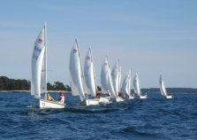
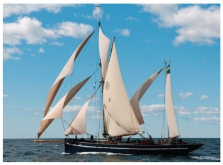

{kind=link}
Verksamhet
|  |  |
{kind=link}
{kind=link}
Därför erbjuder vi kurser, seglarläger, seglarskola och 24-timmarsseglingar för såväl unga som vuxna.
Vill du göra en långresa i främmande vatten får du gemenskap och trygghet genom att delta i någon av våra eskaderseglingar. Om du hellre vill färdas på egen hand kan du få hjälp av klubbens över 50 utlandsombud.
Svenska Kryssarklubbens medlemmar har slagit sig samman i lokala kretsar och intresseområden som arrangerar bland annat kurser, eskadrar, studiebesök och föredrag. De flesta kretsar driver en uthamn.
{kind=link}
Gåsören är Skelleftekretsens uthamn. Fotograf: Per Westergård
Inom Svenska Kryssarklubben finns det 14 kretsar; Blekinge, Bottenhavet, Dacke, Eggegrund, Medelhavsseglarna, S:t Anna, Skellefteå, Stockholm, Sörmland, Uppsala, Vänern, Väster Mälaren, Västkusten och Öresund samt nio nämnder; 24-timmars, båttekniska, eskader, hamn- och farled, information- och marknadsföring, kvinna ombord, sxk-ungom, utbildning och utland.
I menyn till vänster finner du mer information om vår verksamhet.